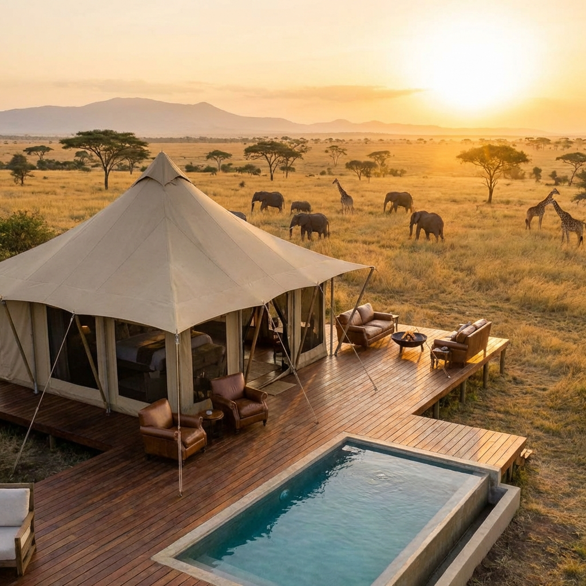
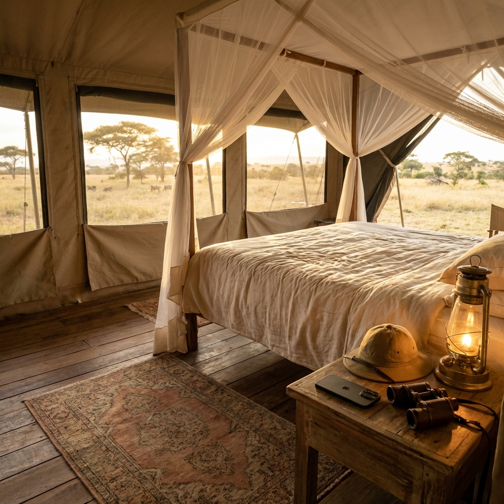
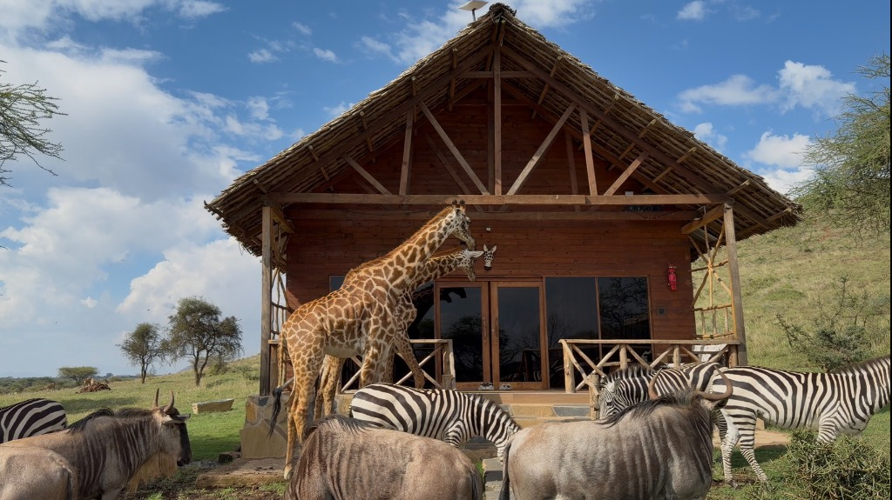
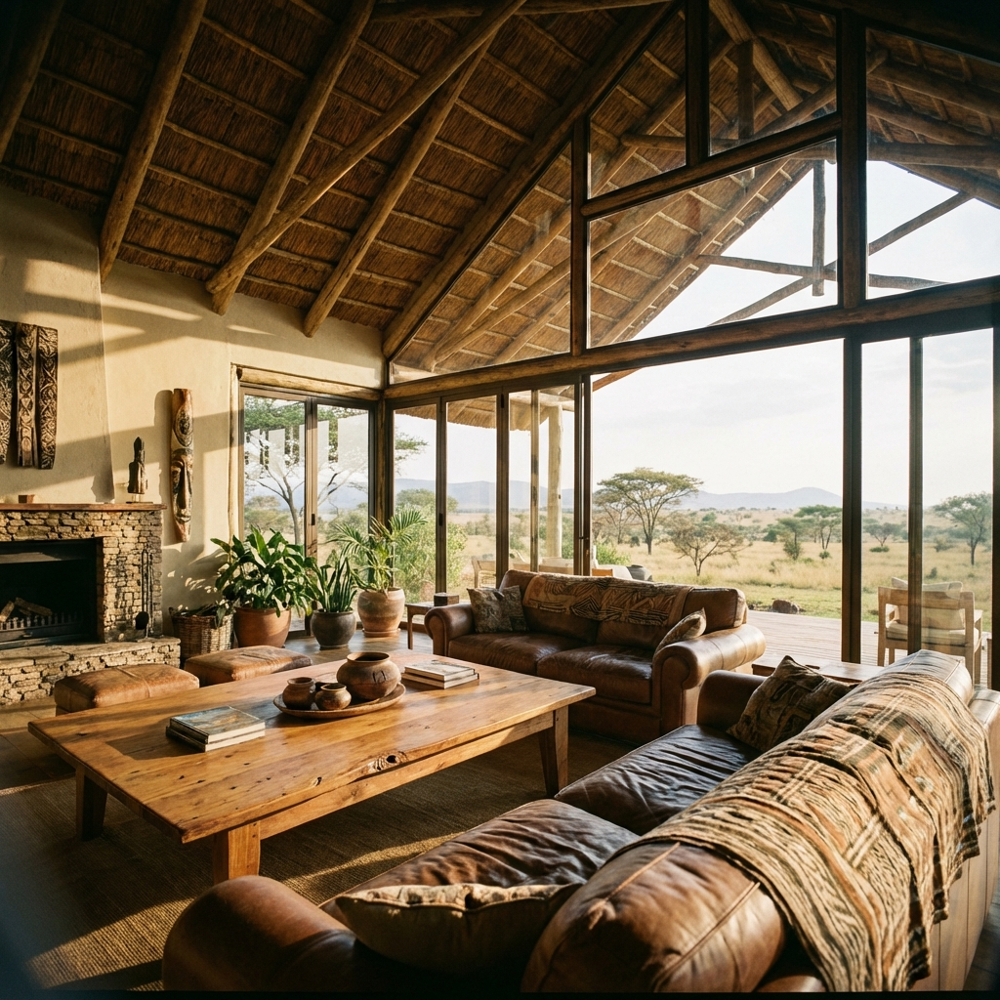
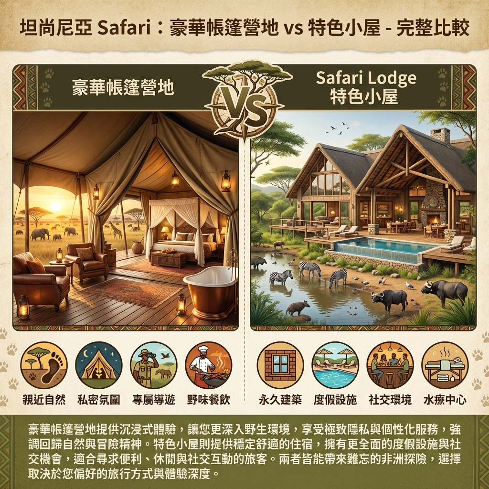
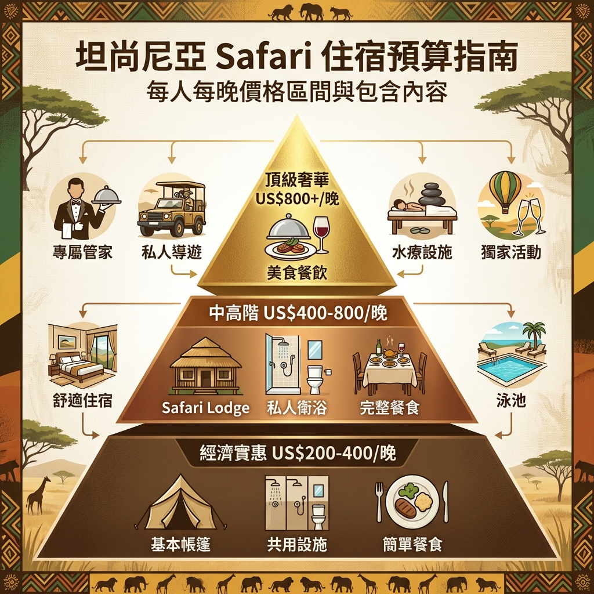
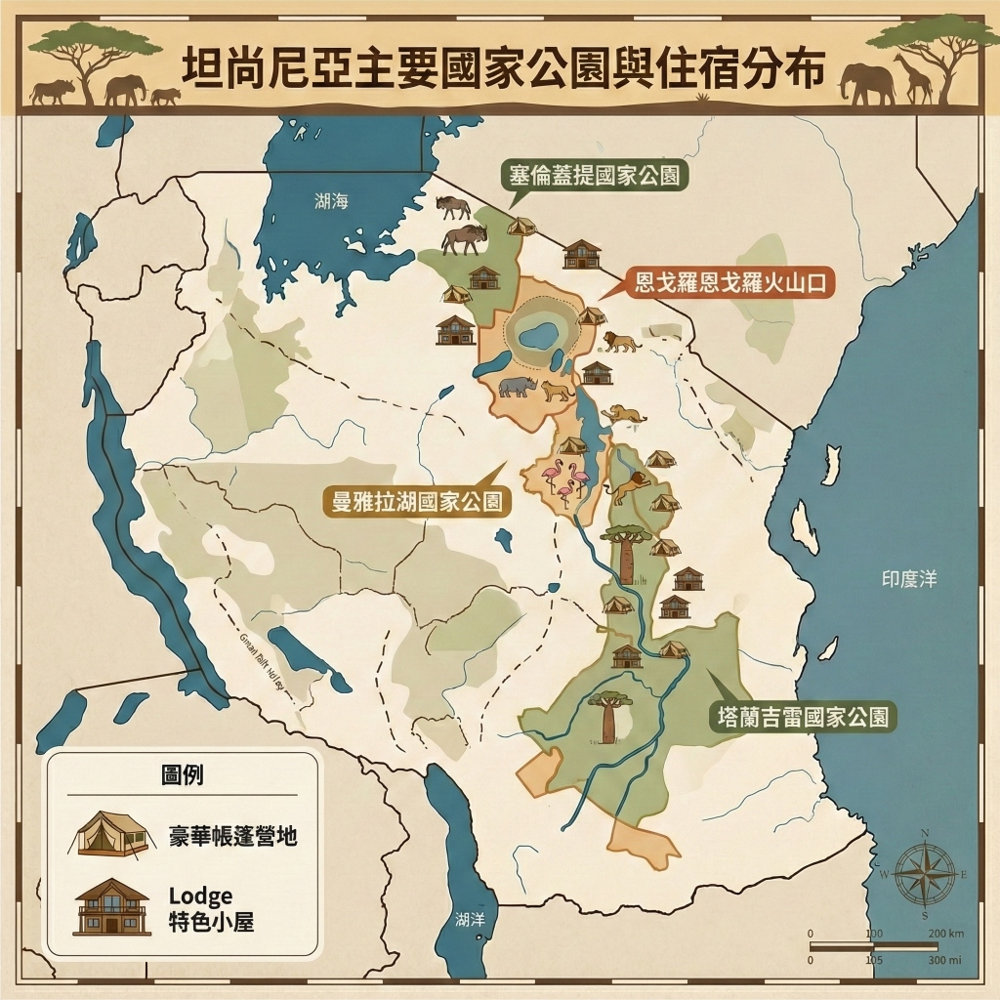

為什麼住宿選擇這麼重要？
在坦尚尼亞 Safari 旅程中，住宿不僅是休息的地方，更是整體體驗的核心。選對住宿類型，能大幅提升旅行品質與回憶深度。
許多旅客在規劃 Safari 時，將大部分預算與注意力放在國家公園路線與野生動物追蹤上，卻忽略了住宿選擇的重要性。事實上，住宿佔整體 Safari 費用的 40-60%，同時也決定了你的舒適度、隱私性、以及與大自然的親密程度。
住宿選擇影響的三大層面：
- 體驗深度： 不同住宿類型提供完全不同的非洲體驗（野奢 vs 度假風）
- 預算分配： 住宿價格從 US$ 200 到 US$ 2000+/晚差異極大
- 行程彈性： 部分營地提供專屬導遊與彈性出發時間
坦尚尼亞 Safari 住宿兩大主流：
- 豪華帳篷營地 (Luxury Tented Camp)： 強調與自然融為一體，提供原始野奢體驗
- Lodge 特色小屋： 永久性建築，設施完善，兼具舒適與景觀
本文將深入比較這兩種住宿類型，幫助你根據預算、喜好、旅行風格，選出最適合的住宿選擇。
豪華帳篷營地 (Luxury Tented Camp) 完整解析
Luxury Tented Camp 是坦尚尼亞 Safari 最具代表性的住宿形式，結合了帳篷的野外氛圍與五星級的奢華享受。
⛺ 什麼是 Tented Camp？
豪華帳篷營地使用厚實的帆布帳篷作為住宿單位，搭建在木製平台或混凝土基座上。雖然外觀是帳篷，但內部設施完全比照高級飯店標準，包括：
- ✅ 真實的雙人床或特大床，高級寢具
- ✅ 獨立衛浴設備（熱水淋浴、沖水馬桶、洗手台）
- ✅ 24 小時供電（太陽能或發電機）
- ✅ 私人陽台或觀景台，面向草原
- ✅ 優雅的木質家具與非洲風格裝飾


🌟 Tented Camp 的核心優勢
移動營地 vs 固定營地：
• 固定營地 (Permanent Camp)： 全年營運，位置固定，設施更完善
• 移動營地 (Mobile/Seasonal Camp)： 跟隨動物大遷徙移動，季節性開放
移動營地能讓你在最佳時機最佳位置觀賞動物遷徙，但價格通常更高。
| 優點 | 說明 |
|---|---|
| 沉浸式體驗 | 夜晚能聽見獅子吼叫、斑馬嘶鳴，真實感受草原生命力 |
| 地點優勢 | 通常位於國家公園深處或私人保護區，觀賞動物更便利 |
| 私密性高 | 帳篷間距離較遠，享受更多隱私與寧靜 |
| 個人化服務 | 通常帳篷數量少（10-20 頂），服務更貼心專屬 |
💰 價格範圍
豪華帳篷營地的價格差異主要取決於地點、季節、與奢華程度：
- 中階： US$ 400-700/人/晚（全包）
- 高階： US$ 700-1200/人/晚（全包）
- 頂級： US$ 1200+/人/晚（如 Singita, &Beyond 品牌）
「全包」通常包含：
✓ 住宿與三餐（早、午、晚餐）
✓ 每日 Game Drive（獵遊活動）
✓ 公園門票
✓ 飲料（含酒精飲料，視營地而定）
✓ 洗衣服務
不包含： 往返營地的交通（可能需額外付費）、小費
🏕️ 推薦營地
以下是坦尚尼亞幾個知名的頂級帳篷營地：
- Serengeti Under Canvas： 移動營地，跟隨大遷徙，極致體驗 ⭐⭐⭐⭐⭐
- Nimali Central Serengeti： 位於塞倫蓋提中心，全年動物豐富 ⭐⭐⭐⭐
- Tarangire Treetops： 樹屋式帳篷，塔蘭吉雷獨特體驗 ⭐⭐⭐⭐
- Ngorongoro Crater Camp： 恩戈羅恩戈羅火山口邊緣，景色壯觀 ⭐⭐⭐⭐⭐
Lodge 特色小屋完整解析
Safari Lodge 是固定建築的高級住宿，提供飯店級別的舒適設施，同時保留野外景觀與自然體驗。
🏨 什麼是 Safari Lodge？
Lodge 是以木材、石材等天然建材建造的永久性建築，通常包含多間客房、公共休息區、餐廳、酒吧、游泳池等設施。與帳篷營地相比，Lodge 更像是位於荒野中的精品飯店。
- ✅ 獨立小屋或連棟房型
- ✅ 現代化衛浴設備（浴缸、淋浴、高級盥洗用品）
- ✅ 穩定的 24 小時供電與熱水
- ✅ 空調或天花板風扇
- ✅ 大型觀景窗或陽台，俯瞰草原或水塘
- ✅ 公共設施：泳池、Spa、酒吧、圖書室


🌟 Lodge 的核心優勢
| 優點 | 說明 |
|---|---|
| 設施完善 | 泳池、Spa、健身房等度假設施一應俱全 |
| 舒適穩定 | 不受天氣影響，隔音較好，部分 Lodge 配備空調 |
| 適合家庭 | 有家庭房、兒童活動區，攜帶小孩更方便 |
| 社交氛圍 | 公共休息區讓旅客交流分享 Safari 經驗 |
Lodge 的設施優勢：
許多高級 Lodge 提供額外服務如專業按摩 Spa、無邊際泳池、星空晚餐等。
對於希望結合 Safari 與度假休閒的旅客，Lodge 是絕佳選擇。
部分 Lodge 甚至提供私人管家服務，滿足頂級旅客需求。
關於空調
部分 Lodge 提供空調，但大多數 Lodge 都沒有空調，因為空調會增加電力消耗，對環境造成負擔。
不過不用太擔心，非洲的夜晚通常很涼爽，而且 Lodge 通常都有良好的通風設施，可以保持舒適的室內溫度。
💰 價格範圍
Lodge 的價格範圍較廣，從經濟型到超奢華都有：
- 經濟型： US$ 200-400/人/晚（含早餐或半食宿）
- 中階： US$ 400-800/人/晚（全包）
- 高階： US$ 800-1500/人/晚（全包，含Spa等設施）
🏨 推薦 Lodges
坦尚尼亞知名的優質 Lodges：
- Four Seasons Safari Lodge Serengeti： 國際五星品牌，設施頂級 ⭐⭐⭐⭐⭐
- Ngorongoro Serena Safari Lodge： 位於火山口邊緣，景色絕美 ⭐⭐⭐⭐⭐
- Tarangire Sopa Lodge： 性價比高，適合家庭 ⭐⭐⭐⭐
- Lake Manyara Serena Safari Lodge： 俯瞰曼雅拉湖，環境優美 ⭐⭐⭐⭐
Tented Camp vs Lodge 深度比較
兩種住宿類型各有特色，選擇時應依據個人喜好、預算、與旅行目的來決定。

📊 詳細比較表
| 比較項目 | Tented Camp 帳篷營地 | Lodge 特色小屋 |
|---|---|---|
| 建築形式 | 帆布帳篷，木製平台 | 永久性建築（木材、石材） |
| 野外感受 | ⭐⭐⭐⭐⭐ 極強，能聽見動物聲音 | ⭐⭐⭐ 適中，隔音較好 |
| 舒適程度 | ⭐⭐⭐⭐ 高，但受天氣影響 | ⭐⭐⭐⭐⭐ 極高，設施更穩定 |
| 隱私性 | ⭐⭐⭐⭐⭐ 極高 | ⭐⭐⭐ 適中 |
| 價格範圍 | US$ 400-1500+/晚 | US$ 200-1500/晚 |
| 適合族群 | 追求原始體驗的冒險家、情侶 | 重視舒適的家庭、年長者 |
| 公共設施 | 基本（餐廳、酒吧、營火區） | 完善（泳池、Spa、健身房） |
| 位置 | 通常更深入荒野 | 視野開闊的戰略位置 |
選擇建議：
- 選擇 Tented Camp 如果你： 想要最原始的 Safari 體驗、享受夜晚聽見獅吼、追求浪漫野奢氛圍
- 選擇 Lodge 如果你： 攜帶家人小孩、重視設施完善度、希望有泳池 Spa 等休閒設施
- 最佳方案： 混搭！前幾晚住 Tented Camp 體驗野奢，後幾晚住 Lodge 放鬆休息
依預算選擇住宿
無論預算高低，都能在坦尚尼亞找到適合的住宿。以下依價格帶提供選擇建議。

經濟實惠
US$ 200-400/人/晚
👥 適合族群：
預算有限但仍想體驗 Safari 的背包客、年輕旅客
| 住宿類型 | 基本帳篷營地、經濟型 Lodge |
| 包含內容 | 住宿 + 早餐或半食宿 |
| 需自費項目 | Game Drive、公園門票 |
✨ 推薦選項：
- Migombani Campsite (基本設施，位於塞倫蓋提)
- Jambo Lodge (近阿魯沙，適合短期停留)
中高階
US$ 400-800/人/晚
👥 適合族群：
追求舒適體驗的主流旅客、蜜月情侶
| 住宿類型 | 優質帳篷營地、中階 Lodge |
| 包含內容 | 全包（三餐 + Game Drive + 公園門票） |
| 特色 | 私人陽台、獨立衛浴、優質餐飲 |
✨ 推薦選項：
- Nimali Central Serengeti (帳篷營地，位置極佳)
- Tarangire Sopa Lodge (中階 Lodge，性價比高)
- Ngorongoro Farm House (火山口附近，環境優美)
頂級奢華
US$ 800+/人/晚
👥 適合族群：
追求極致體驗的頂級旅客、特殊紀念旅行
| 住宿類型 | 頂級帳篷營地、五星 Lodge |
| 包含內容 | 超豪華全包（私人導遊、Spa、美酒佳釀、特殊活動） |
| 特色 | 專屬管家、無邊際泳池、直升機體驗 |
✨ 推薦選項：
- Singita Sasakwa Lodge (頂級品牌，極致奢華)
- &Beyond Ngorongoro Crater Lodge (火山口邊緣，景觀無敵)
- Four Seasons Safari Lodge Serengeti (國際五星，設施完善)
省錢小撇步：
• 淡季出發（3-5月、11月）住宿價格可便宜 30-40%
• 連住優惠：多數營地提供連住 3 晚以上折扣
• 提早預訂：提前半年預訂可享早鳥優惠
• 混搭策略：高價位營地住 2 晚體驗，其他選擇中階住宿
依地點選擇住宿推薦
不同國家公園的住宿各有特色，以下提供各主要目的地的推薦選擇。

🦁 塞倫蓋提國家公園 (Serengeti)
塞倫蓋提住宿選擇最多樣，依區域可分為北部、中部、西部廊道：
| 區域 | 推薦住宿 | 特色 |
|---|---|---|
| 中部塞倫蓋提 | Nimali Central Serengeti | 全年動物豐富，位置極佳 |
| 北部（大遷徙路線） | Serengeti Under Canvas | 移動營地，跟隨遷徙 |
| 西部廊道 | Serengeti Migration Camp | 5-7月渡河季最佳位置 |
🌋 恩戈羅恩戈羅火山口 (Ngorongoro Crater)
火山口邊緣住宿視野絕佳，但選擇較少：
- &Beyond Ngorongoro Crater Lodge： 頂級奢華，火山口邊緣無敵景觀 ⭐⭐⭐⭐⭐
- Ngorongoro Serena Safari Lodge： 中高階，價格合理且景色優美 ⭐⭐⭐⭐
- Ngorongoro Farm House： 火山口外圍，經濟實惠 ⭐⭐⭐
🐘 塔蘭吉雷國家公園 (Tarangire)
以大象聞名，住宿氛圍較為輕鬆悠閒：
- Tarangire Treetops： 樹屋式帳篷營地，獨特體驗 ⭐⭐⭐⭐⭐
- Tarangire Sopa Lodge： 中階 Lodge，性價比高 ⭐⭐⭐⭐
- Maramboi Tented Lodge： 位於湖畔，景色優美 ⭐⭐⭐⭐
🦩 曼雅拉湖國家公園 (Lake Manyara)
通常作為中轉站，住宿以經濟實惠為主：
- Lake Manyara Serena Safari Lodge： 俯瞰湖景，環境舒適 ⭐⭐⭐⭐
- Lake Manyara Kilimamoja Lodge： 經濟型選擇 ⭐⭐⭐
常見問題 Q&A
整理旅客最常詢問的住宿相關問題，幫助你做出更明智的選擇。
Q: 應該選擇帳篷還是 Lodge？
A:
取決於你的旅行風格！
• 想要原始野奢體驗 → 帳篷營地（更有冒險感，夜晚能聽見動物聲音）
• 重視舒適與設施 → Lodge（泳池、Spa、穩定供電）
• 最推薦： 混搭！前半段住帳篷體驗野外，後半段住 Lodge 放鬆休息
Q: 什麼時候訂房最划算？
A:
提早預訂是王道！
• 最佳訂房時機： 出發前 6-12 個月
• 早鳥優惠： 許多營地提供提前半年預訂 10-20% 折扣
• 淡季優勢： 3-5月、11月價格可便宜 30-40%
• 熱門營地： 如 Serengeti Under Canvas，旺季常需提前一年預訂
Q: 「全包」包含哪些內容？
A:
大多數中高階住宿採用「全包」制：
✓ 包含：
• 住宿與三餐（早、午、晚餐）
• 每日 Game Drive（獵遊活動，通常早晚各一次）
• 公園門票
• 非酒精飲料（部分含酒精飲料）
• 洗衣服務
✗ 不包含：
• 往返營地的交通（可能需額外付費）
• 小費（建議每日 US$ 20-30）
• 個人消費（Spa、特殊活動等）
Q: 帶小孩適合住哪種？
A:
建議選擇 Lodge！
原因：
• 帳篷營地通常不接受 6 歲以下兒童（安全考量）
• Lodge 有家庭房型、兒童泳池、遊戲區
• 設施更完善，父母較安心
• 部分 Lodge 提供兒童專屬活動
推薦家庭友善 Lodge：
• Four Seasons Safari Lodge Serengeti
• Tarangire Sopa Lodge
Q: 住宿安全嗎？會不會有動物跑進來？
A:
非常安全！所有住宿都有嚴格的安全措施：
• 帳篷營地： 帳篷拉鍊完全密封，帆布厚實堅固
• 24小時保全： 營地有武裝警衛巡邏
• 夜間陪同： 晚上外出必有工作人員持手電筒陪同
• 動物闖入極罕見： 偶爾有猴子、猩猩好奇靠近，但無危險
安全提醒： 不要在天黑後獨自外出，不要餵食動物
Q: 住宿有 WiFi 嗎？
A:
視住宿等級而定：
• 頂級 Lodge： 通常有 WiFi，但速度不快
• 帳篷營地： 多數沒有 WiFi（鼓勵 Digital Detox）
• 建議： 購買當地 SIM 卡（Vodacom 或 Airtel），國家公園內訊號有限但主要營地附近可用
溫馨提醒： 享受遠離網路的 Safari 體驗，專注在眼前的自然美景！
準備好選擇你的夢幻住宿了嗎？
住宿，是 Safari 旅程的靈魂。
選對住宿，讓每個清晨的日出、每個夜晚的星空，都成為永恆的回憶。
無論是帳篷裡聽見獅吼的震撼，
還是 Lodge 泳池畔的悠閒時光，
坦尚尼亞的草原，正等著你入住這場夢境。